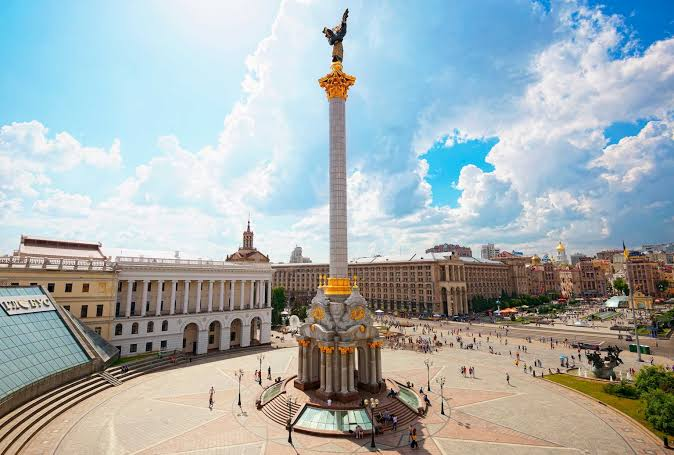
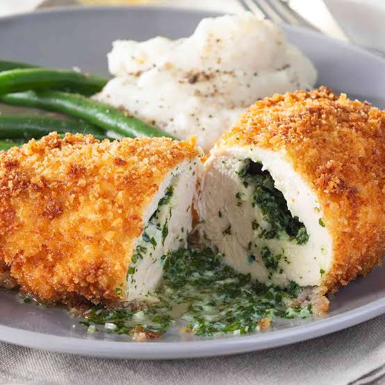
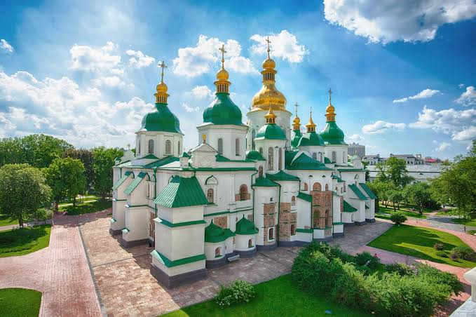
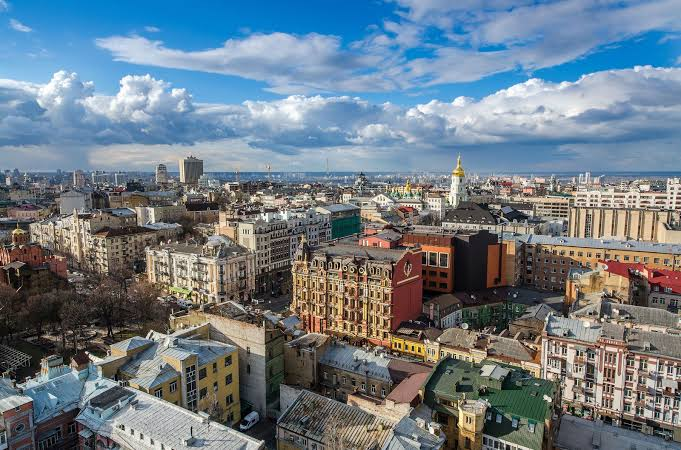

Визначні пам'ятки
Серце столиці — Майдан Незалежності, місце важливих подій і зустрічей киян та гостей міста.

Кухня та гастрономія
У Києві можна скуштувати українські вареники, борщ і сучасні страви в численних кав'ярнях та ресторанах.

Культура та традиції
Золотоверхі собори та старовинні монастирі нагадують про багатовікову історію Києва.

Особисті історії
Особливо запам'яталася прогулянка вулицями центру, звідки відкриваються краєвиди на історичні квартали міста.
